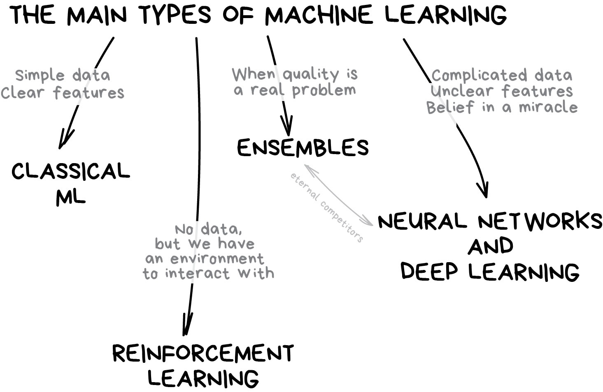
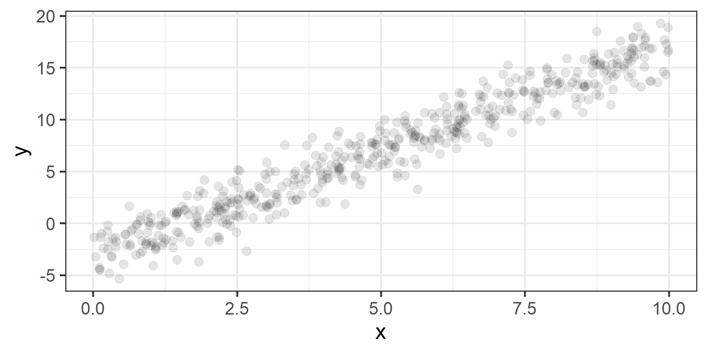

Introduction to Machine Learning
Fundamentals of Machine Learning for NHS using R
What is Machine Learning?
Machine Learning is…
Field of study that gives computers the ability to learn without being explicitly programmed
Arthur Samuel is credited for this definition, but there is no source of it!
Opinionated Quick History
Arthur Samuel
Was a pioneer of artificial-intelligence research
In 1959, while working at IBM, he published a paper that popularized the term machine learning
Programming computers to learn from experience should eventually eliminate the need for much of this detailed programming effort.
A computer can be programmed so that it will learn to play a better game of checkers than can be played by the person who wrote the program.


Deep Blue (1996-1997)
February 1996, first computer program to defeat a world champion in a classical game under tournament regulations (Kasparov–Deep Blue 4–2)
March 1997, first computer program to defeat a world champion in a match under tournament regulations (Deep Blue–Kasparov 3½–2½)
AlphaGo (2016)

Back to our Question! What is Machine Learning?
Another Definition
A computer program is said to learn from experience E with respect to some class of tasks T and performance measure P if its performance at tasks in T, as measured by P, improves with experience E


So What is Machine Learning?
The term machine learning refers to the automated detection of meaningful patterns in data.

Machine Learning Applications We May Use Everyday
Email spam and malware filters (Gmail, Outlook, …)
Commute estimation (Google Maps, Waze, …)
Fraud detection (banking)
Online customer support (chatbots)
Image recognition (Facebook, Pinterest, …)
Search engine results refining (Google)
Product reccomendation (Amazon)
Healthcare
Virtual personal smart assistants (Alexa, Cortana, Google Assistant, Siri)
…
Supervised and Unsupervised Learning
Learning Settings
Learning Problems
- Supervised Learning
- Unsupervised Learning
- Reinforcement Learning
Statistical Inference
- Inductive Learning
- Deductive Learning
- Transductive Learning
Hybrid Learning Problems
- Semi Supervised Learning
- Self Supervised Learning
- Multi Instance Learning
Learning Techniques
- Multi Task Learning
- Active Learning
- Online Learning
- Transfer Learning
- Ensemble Learning

Supervised vs Unsupervised Learning
In supervised learning we are given a dataset and already know what our correct output should look like, assuming that there is a relationship between the input and the output.
In unsupervised learning we have no idea what our results should look like. Unsupervised methods try to capture patterns without knowing how these patterns look like.

Supervised vs Unsupervised Learning


In Essence
Supervised learning wants to build predictive models
Unsupervised learning wants to build descriptive models

In This Course
We will talk ONLY about supervised learning techniques
Some Maths

What Are We Actually Trying to Do?
In supervised learning we are assuming that there is a relationship between input (usually denoted as \(X\)) and output (usually denoted as \(Y\)), and we want to express it in terms of a mathematical function.

What is a (Mathematical) Function?
Given two sets, a function is a relationship that associates to each element of the first set, one and only one element of the second set.
If \(f\) is a function from the set \(X\) to the set \(Y\) we write
\[f: X \to Y\]
The element \(y\) of \(Y\) associated by \(f\) to the element \(x\) of \(X\) is denoted by \(f(x)\). Therefore we write
\[y = f(x)\]
Terminology
We said that \(X\) and \(Y\) are sets, more precisely they are the input and the output set respectively.
But we will also use \(X\) and \(Y\) also to name variables.
Various terms are used interchangeably:
\(X\): “independent variable”, “input variable”, “predictor”, “feature”, “attribute”.
\(Y\): “dependent variable”, “output variable”, “target”, “response”, “outcome”.
Hence We Want to Find a Function!
Start with \(N\) input-output pairs of observed data
\[ \begin{multline} (x^{(1)},y^{(1)}), (x^{(2)},y^{(2)}), \dots, (x^{(N)},y^{(N)}) = \\ = \left\{(x^{(i)},y^{(i)})\right\}_{i = 1}^N \end{multline} \]
Problem: find the function \(f: X \to Y\) that has generated the observed outputs given the corresponding inputs.
A Visual Example
Another Visual Example

So, What is the Situation?
We observe \(N\) input-output pairs \(\left\{(x^{(i)},y^{(i)})\right\}_{i = 1}^N\).
We assume that there is some relationship between the predictor \(X\) and the response \(Y\), which can be written in the form
\[Y = f(X) + \varepsilon\]
where \(\varepsilon\) is a random error term that is independent of \(X\) and “on average” is equal to zero.
It Can Be a Little Bit More Complicated…
In general the number of predictors is more than one.
So instead of having just \(X\), we have \(X_1, X_2, \dots, X_m\).
Hence we observe tuples rather than pairs
\[\left\{(x^{(i)}_1, x^{(i)}_2, \dots, x^{(i)}_m,y^{(i)})\right\}_{i = 1}^N\]
Therefore the relationship between input and output is written as
\[Y = f(X_1, X_2, \dots, X_m) + \varepsilon\]
But We Can Still Write It in a Simple Form
We can write
\[X = (X_1, X_2, \dots, X_m) \]
Therefore the relationship between input and output is written as
\[Y = f(X) + \varepsilon\]
and we silently remember that the input can have \(m\) dimensions.
The Problem
The problem is simple to state: find \(f\).
In essence, statistical learning refers to a set of approaches for estimating \(f\).
The issue is that we will never find the exact \(f\). Therefore we lower our expectations and we set our goal to find an estimate of \(f\), that we are going to write as \(\hat{f}\).
Why Estimate \(f\)?
- Make predictions: given new (input) data \(X_{\text{new}}\) you want to find
\[\hat{Y} = \hat{f}(X_{\text{new}})\]
- Inference
- Which predictors are associated with the response?
- What is the relationship between the response and each predictor?
- Can the relationship between Y and each predictor be adequately summarized using a linear equation, or is the relationship more complicated?
Classification and Regression
Types of Variables
Categorical variables can take a limited number of possible values assigning each observation to a group
Numerical variables can take values within a (possibly unbounded) numerical interval
Classification vs Regression (in words)
What kind of output we are trying to predict?
In classification the objective is to predict a categorical outcome
In regression the objective is to predict a numerical outcome
However often in classification problems rather than predict a particular class, we often want predict the probability of a particular class.
Classification vs Regression (in maths)
- In classification the output set is of the form
- \(Y = \{0, 1\}\) binary classification (2 categories) or
- \(Y = \{0, 1, 2, ..., K\}\) multinomial classification (more that 2 categories)
- In regression the output set is of the form
- \(Y = \mathbb{R}\) all possible (real) numbers
- \(Y = [a, b]\) all numbers within a certain range (possibly unbounded)
Classification vs Regression (in pictures)


How Can We Find \(f\)?
Two Possible Methods
Parametric
Assume that \(f\) has a particular functional form depending on a set of parameters.
Estimate parameters using observed data.
- Advantages: easy to estimate.
- Disavantages: assumptions may be very wrong!
Non-Parametric
Don’t make particular assumptions on the functional form of \(f\).
Estimate a function that adapts smoothly to the observed data “avoiding excessive oscillations and edgy behaviours”.
- Advantages: can estimate effectively many functions.
- Disadvantages: need a lot of data!
Parametric Models for Regression
Hypothesis Function
In Parametric methods, we will make assumption about the functional form of the function \(f\). In other words we assume that \(f\) can be written in a particular form. We call it hypothesis function, we denote it as \(h\), and it will depend on one or more parameters.
A First Model for Regression
Model
A very simple model for regression is given by
\[h(x) = \beta_0 \qquad \beta_0 \in \mathbb{R}\]
Geometric Interpretation
What does \(h(x) = \beta_0\) represents?
Problem
How can we find the best \(\beta_0\)?
For Example
How do we find the “best” one?
What actually best means in this context?
One ingredient is still missing…
Loss (or Cost, or Risk) Function
We need a way to measure how good is our fit given the choice made on parameters. This is done using a so-called loss function the we will denote as \(\mathcal{L}(\hat{y}, y)\), where \(\hat{y} = h(x)\).
Basically we:
Select a hypothesis function \(h(x)\)
Make a choice for its parameters
Predict \(\hat{y} = h(x)\) for all observed \(x\)’s
Compare \(y\) and \(\hat{y}\) using the loss function
Repeat 2. to 4. for many parameters choices and the select the one with minimum loss
This procedure is know as Empirical Risk Minimization.
Square Loss
In regression problems a common choice for the loss function is the square loss.
\[ \mathcal{L}(\hat{y}, y) = \frac{1}{N} \sum_{i = 1}^N \left( \hat{y}^{(i)} - y^{(i)} \right)^2 \]
where for \(i = 1, \dots, N\)
\[ \hat{y}^{(i)} = h(x^{(i)}) \]
Back to Our Model
Since \(\hat{y}^{(i)} = h(x^{(i)}) = \beta_0\) for \(i = 1, \dots, N\) then our problem is
\[ \min_{\beta_0} \left[ \frac{1}{N} \sum_{i = 1}^N \left( \beta_0 - y^{(i)} \right)^2 \right] \]
With some maths, pen and paper it is possible to show that the best \(\beta_0\), the one that minimizes the loss, is the average of the observed \(y\)’s.
For Example


A Second Model for Regression
Model
A very commonly used model for regression (with one predictor) is given by
\[h(x) = \beta_0 + \beta_1 x \qquad \beta_0, \beta_1 \in \mathbb{R}\]
Geometric Interpretation
What does \(h(x) = \beta_0 + \beta_1 x\) represents?
Problem
How can we find the best \(\beta_0\) and \(\beta_1\)?
For Example

How do we find the “best” one?
Statement of the Problem
Since \(\hat{y}^{(i)} = h(x^{(i)}) = \beta_0 + \beta_1 x^{(i)}\) for \(i = 1, \dots, N\), then our problem, also know as ordinary least squares (OLS), is
\[ \min_{\beta_0, \beta_1} \left[ \frac{1}{N} \sum_{i = 1}^N \left( \beta_0 + \beta_1 x^{(i)} - y^{(i)} \right)^2 \right] \]
Again with some maths, pen and paper it is possible to find a solution, but is not that easy to write (and to find!).
For Example
What if We Have More Predictors?
Model
In case of more predictors, the model is of the form
\[h(x) = \beta_0 + \beta_1 x_1 + \dots + \beta_m x_m \qquad \beta_0, \beta_1, \dots, \beta_m \in \mathbb{R}\]
Geometric Interpretation
What does \(h(x) = \beta_0 + \beta_1 x_1 + \dots + \beta_m x_m\) represents?
Problem
How can we find the best \(\beta_0,\beta_1, \dots, \beta_m\)?
Statement of the Problem
Since
\[\hat{y}^{(i)} = h(x^{(i)}) = \beta_0 + \beta_1 x_1^{(i)} + \dots + \beta_m x_m^{(i)}\]
for \(i = 1, \dots, N\), then our problem is
\[ \min_{\beta_0, \beta_1, \dots, \beta_m} \left[ \frac{1}{N} \sum_{i = 1}^N \left( \beta_0 + \beta_1 x_1^{(i)} + \dots + \beta_m x_m^{(i)} - y^{(i)} \right)^2 \right] \]
Some Comments
We wrote the general statement of the problem for linear regression!
Find the best values for the parameters is a job that we let computers do. There are algorithms that are disigned speficically for this. From a machine learning practitioner perspective we do not need to know that.
Linear regression is one possible model, there are many more!
In “classical” statistics a similar model is discussed, but there are assumptions to check and other things can be said. We won’t discuss most of them.
Parametric Model for Binary Classification
Logistic Function
Logistic (or Logit) function is defined by
\[\sigma(x) = \frac{1}{1+e^{-x}}\]
It is also know with the name of sigmoid function.

If \(x\) is large positive, then \(\sigma(x) \approx 1\)
If \(x\) is large negative, then \(\sigma(x) \approx 0\)
Logistic Regression
Model
A possible model for classification (with one predictor) is given by
\[h(x) = \sigma(\beta_0 + \beta_1 x) = \frac{1}{1+e^{-(\beta_0 + \beta_1 x)}} \qquad \beta_0, \beta_1 \in \mathbb{R}\]
Geometric Interpretation
What does \(h(x)\) represents?
Problem
How can we find the best \(\beta_0\) and \(\beta_1\)?
Wait! There is a Mistake!
Logistic regression for classification?!?!
The regression part in the Logistic Regression name derives from technical similarities with Linear Regression when estimating parameters for both models. It’s just a name, a legacy that comes from the past. However logistic regression is used only for classification.
Cross Entropy Loss
In classification problems a choice for the loss function is the cross entropy loss.
\[ \mathcal{L}(\hat{y}, y) = -\frac{1}{N} \sum_{i = 1}^N \left(y^{(i)} \log \hat{y}^{(i)} + (1 - y^{(i)}) \log (1 - \hat{y}^{(i)}) \right) \]
where for \(i = 1, \dots, N\)
\[ \hat{y}^{(i)} = h(x^{(i)}) = \sigma(\beta_0 + \beta_1 x^{(i)}) = \frac{1}{1+e^{-(\beta_0 + \beta_1 x^{(i)})}} \]
Statement of the Problem
Our problem is
\[ \min_{\beta_0, \beta_1} \left[ -\frac{1}{N} \sum_{i = 1}^N \left(y^{(i)} \log \hat{y}^{(i)} + (1 - y^{(i)}) \log (1 - \hat{y}^{(i)}) \right) \right] \]
where
\[\hat{y}^{(i)} = h(x^{(i)}) = \frac{1}{1 + e^{-(\beta_0 + \beta_1 x^{(i)})}}\]
for \(i = 1, \dots, N\).
Cross Entropy Loss?
Let’s focus on a single observation.
If \(y = 1\), then
\[\text{loss} = -\left(y \log \hat{y} + (1 - y) \log(1 - \hat{y}) \right)\]
becomes
\[\text{loss} = -\log \hat{y}\]
Hence the loss is lower for \(\hat{y}\) approaching \(1\).
If \(y = 0\), then
\[\text{loss} = -\left(y \log \hat{y} + (1 - y) \log(1 - \hat{y}) \right)\]
becomes
\[\text{loss} = -\log(1 - \hat{y})\]
Hence the loss is lower for \(\hat{y}\) approaching \(0\).
Want to See the Numbers?
For Example

Why Logistic Regression?
Assuming the the hypothesis function is of the form of the logistic regression may seem innatural.
However there are two good features that come together with logistic regression:
Predictions are values between \(0\) and \(1\), therefore can be interpreted as probabilities
Compared to linear regression, logistic regression would be less affected by outliers.
For example


What if We Have More Predictors?
Model
In case of more predictors, the model is of the form
\[ \begin{multline} h(x) = \sigma(\beta_0 + \beta_1 x_1 + \dots + \beta_m x_m) \\ = \frac{1}{1+e^{-(\beta_0 + \beta_1 x_1 + \dots + \beta_m x_m)}} \\ \beta_0, \beta_1, \dots, \beta_m \in \mathbb{R} \end{multline} \]
Problem
How can we find the best \(\beta_0,\beta_1, \dots, \beta_m\)?
So, we’re done with the theory?
Yes! (Practical session will come after lunch)
What’s next?
During this course you’ll learn how to train different families of models. Then when you have a new problem, you’ll try the models you have in your toolbox and pick the best one.
Should you try all of them?
No Free Lunch Theorem
Why should we try (and therefore learn to use) different families of functions and not try the “best” family?
The No Free Lunch Theorem states that there is no one model that works best for every situation. Because the assumptions of a great model for one issue may not hold true for another, it is typical in machine learning to attempt many models to discover the one that performs best for a specific problem.
References
References (practitioner’s guides)
R opinionated (of course!) references:
Bradley Boehmke and Brandon M. Greenwell, Hands-On Machine Learning with R, 2019 free access
Gareth James, Daniela Witten, Trevor Hastie, and Robert Tibshirani, An Introduction to Statistical Learning: with Applications in R (2nd Edition), 2021, free access
Max Kuhn and Kjell Johnson, Applied Predictive Modelling, 2013
Max Kuhn and Kjell Johnson, Feature Engineering and Selection: A Practical Approach for Predictive Models, 2019, free access
Max Kuhn and Julia Silge, Tidy Modeling with R, 2022, free access
Brett Lantz, Machine Learning with R (3rd Edition), 2019
References (mathematical theory)
If you really want to know more mathematical details. But be warned, the following are not easy readings…
Luc Devroye, Gábor Lugosi, and László Györfi, A Probabilistic Theory of Pattern Recognition, 1996
Trevor Hastie, Robert Tibshirani, and Jerome Friedman, The Elements of Statistical Learning: Data Mining, Inference, and Prediction (2nd Edition), 2009
Shai Shalev-Shwartz and Shai Ben-David, Understanding Machine Learning, 2014
Thank you!
Questions?